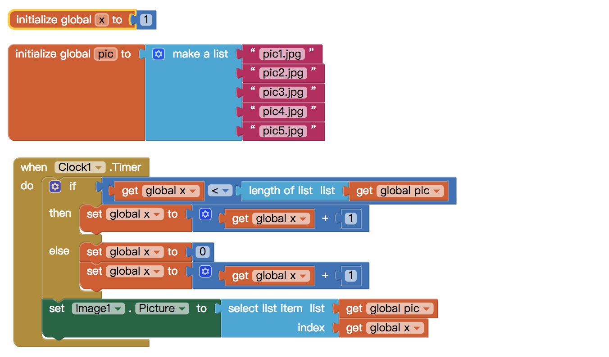

APP題目
說明構想中的App：
1. 創作背景及動機
創作這個是希望透過這個app可以讓人了解更多甜點的歷史背景和文化。也可以尋找透過這個app去尋找想要的甜點和相關店家。
2. 設計理念，包括：功能說明和操作說明
設計理念與功能操作說明 主畫面以甜點櫃的形式呈現，每天都會有不一樣的甜點，點選其甜點就會有它的介紹和相關店家。主頁面下方有三個選項，分別是推薦咖啡廳、甜點介紹、我的最愛。有任何喜歡的甜點和咖啡廳都可以按愛心收藏。
說明構想中的App：
1. 創作背景及動機
創作這個是希望透過這個app可以讓人了解更多甜點的歷史背景和文化。也可以尋找透過這個app去尋找想要的甜點和相關店家。
2. 設計理念，包括：功能說明和操作說明
設計理念與功能操作說明 主畫面以甜點櫃的形式呈現，每天都會有不一樣的甜點，點選其甜點就會有它的介紹和相關店家。主頁面下方有三個選項，分別是推薦咖啡廳、甜點介紹、我的最愛。有任何喜歡的甜點和咖啡廳都可以按愛心收藏。


寫給老師或自己的一段話，這門課學習的感想。希望大家的內容，值得回憶紀念...